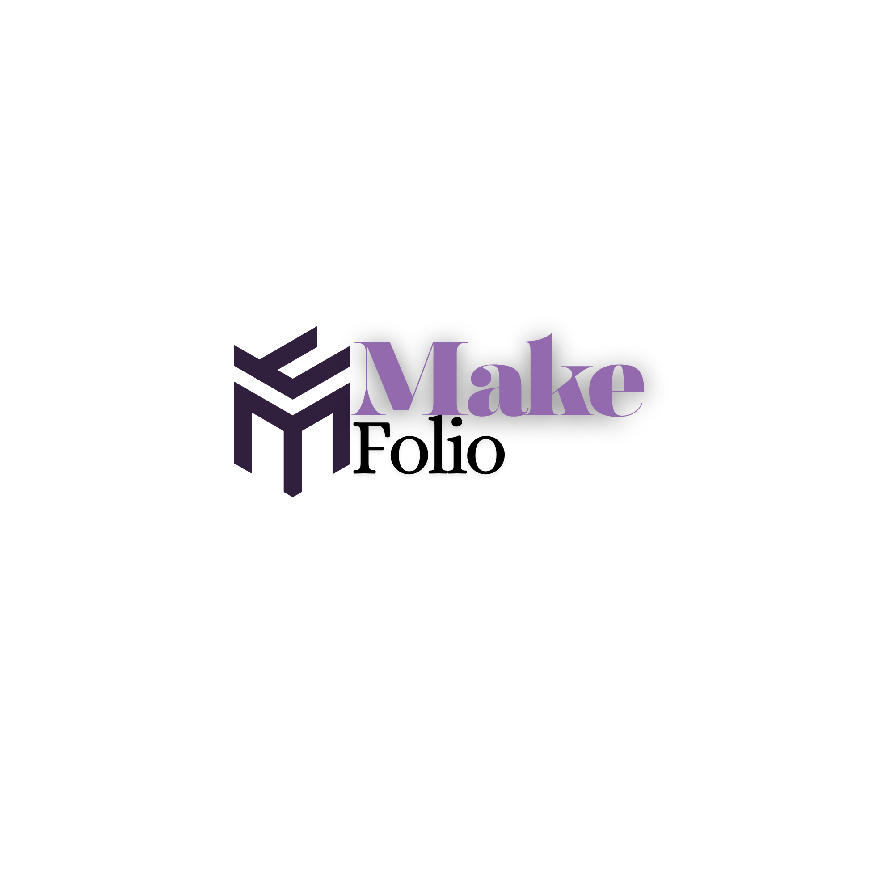

In today’s digital world, many people struggle to properly present their skills, projects, and experience in a clear and professional way. Whether in design, development, or other creative fields, work often remains unorganized or hidden, making it difficult for others to evaluate talent and potential. Without a structured way to showcase achievements, it becomes harder to stand out in a competitive environment and attract opportunities.
A portfolio is a personal digital website that represents your identity as a creative or technical professional. It contains your projects, skills, experience, and achievements in one organized place. Instead of just writing about yourself, a portfolio allows you to show real examples of your work and demonstrate your abilities visually.
Having a portfolio is very important in today’s competitive world. It helps you stand out from others, increases your chances of getting hired, and attracts potential clients. A well-designed portfolio builds trust and shows professionalism, making it easier for people to understand your value and skills.
This application helps you easily create your own portfolio step by step. You can start by adding your personal information, then upload your projects, skills, and experiences using simple forms. The app automatically organizes everything into a clean and professional layout. Once you finish, you can preview your portfolio in real time and publish it with a single click. After publishing, you receive a shareable link that you can send to employers, clients, or post on social media.